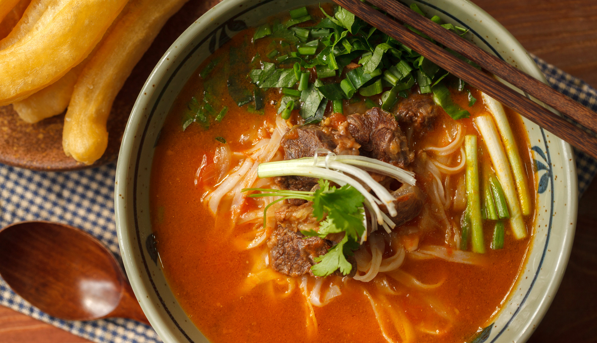

.jpg)
Phở bò sốt vang
Công thức
-Nguyên liệu- 500 gr thịt bò
- 600 gr phở tươi
- 250 gr phở tươi
- 150 gr hành tây
- 15 gr tỏi
- 30 gr hành lá
- 30 gr rau mùi
- 1 là nguyệt quế
- 2 hoa đồi
- 2 gr quế
- 15 ml dầu hào
- 5 gr hạt nêm
- 5 gr ngũ vị hương
- 5 gr tiêu xay
- 5 gr đường
- 5 gr hạt tiêu điều
- 60 ml rượu vang đỏ
1. Ướp thịt
– Thịt bò nên chọn phần nhiều gân và xen lẫn mỡ. Rửa sạch, thái miếng vừa ăn, nên thái to một chút để khi nấu thịt “teo” bớt là vừa. – Ướp thịt với 1 thìa café (5 gr) hạt nêm/ bột gia vị, ½ thìa café (2 gr) tiêu xay, 1 thìa canh (15 ml) dầu hào, ½ thìa café (3 g) đường, ½ thìa café (2 gr) ngũ vị hương, 2 thìa canh (30 ml) rượu vang trong 20 – 30 phút cho ngấm. Nếu có thời gian, nên để thịt trong hộp kín, để ngăn mát tủ lạnh khoảng 2 – 4 giờ.2. Sơ chế các nguyên liệu khác
– Cà chua rửa sạch, bổ múi cau.
– Hành tây, tỏi bóc vỏ, băm nhỏ.
– Hành lá, rau mùi nhặt và rửa sạch, thái nhỏ.
3. Làm nóng khoảng 1 thìa canh dầu ăn trong nồi, cho hạt điều màu vào rang cho phôi hết màu đỏ rồi vớt ra. Màu điều không bắt buộc, nếu không dùng, bạn có thể thay dầu ăn bằng bơ nhé. Món sốt vang này có thêm một chút bơ sẽ ngon hơn kha khá (kể cả ăn với phở vẫn hợp).
4. Phi thơm tỏi trong nồi vừa rang hạt điều, cho hành tây vào xào tới khi hơi xém vàng.
5. Cho cà chua, thịt bò vào nồi, đảo đều tới khi thịt vừa chín tới và săn lại. Đổ khoảng 4 bát to nước sôi vào nồi, đun sôi trở lại, hớt bớt bọt (nếu có). Lưu ý dùng nước nóng để thịt không bị co rút đột ngột và mất nước.
6. Thả vào nồi lá nguyệt quế, hoa hồi và quế. Nêm nếm gia vị cho vừa miệng. Đậy vung ninh nhỏ lửa tới khi thịt bò mềm.
7. Bánh phở tươi trần qua nước sôi trong 1 – 2 phút rồi chia đều ra các bát, rắc hành mùi và chan nước, thịt bò rồi thưởng thức.